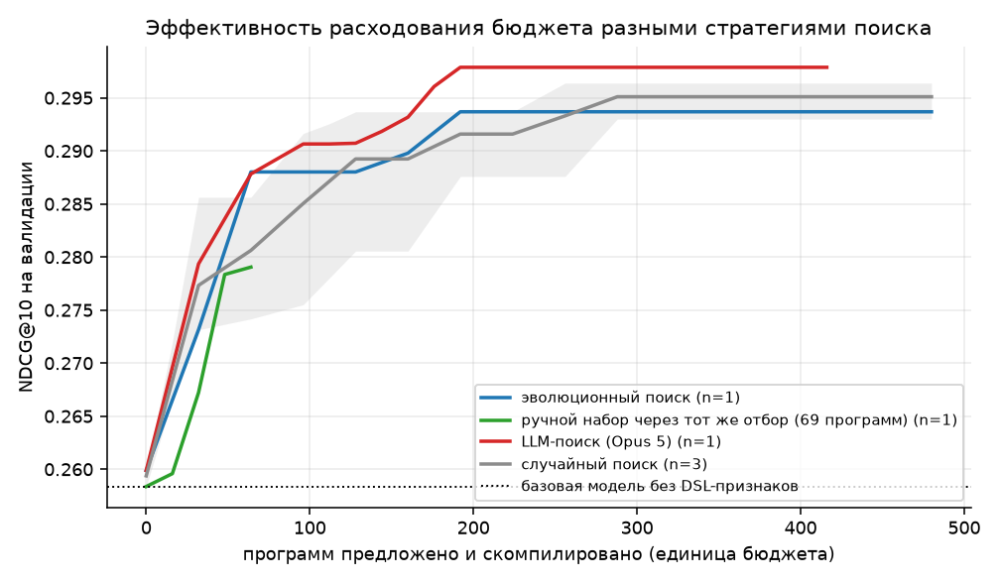
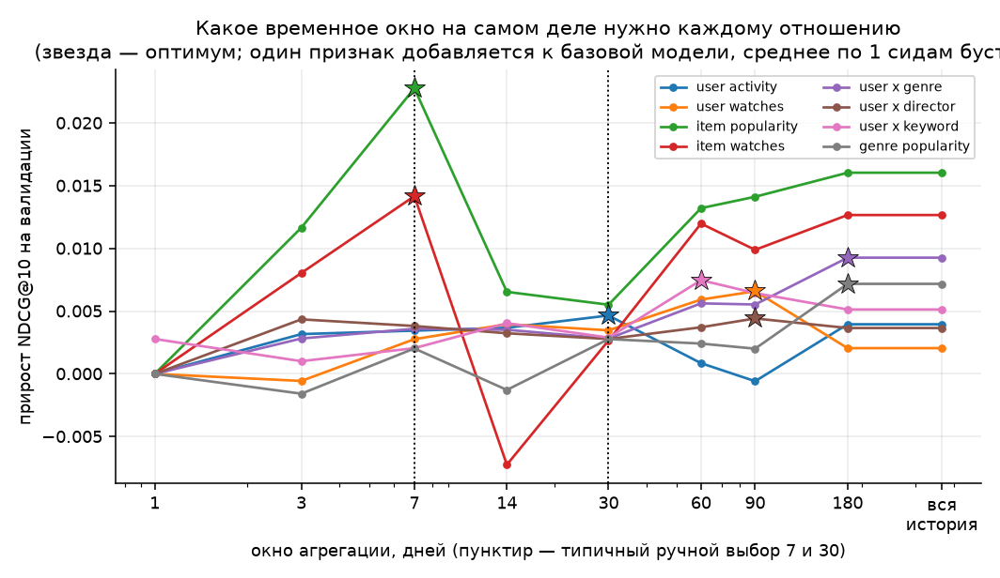
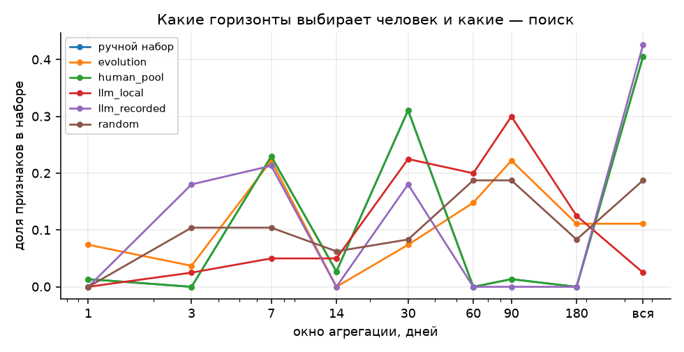
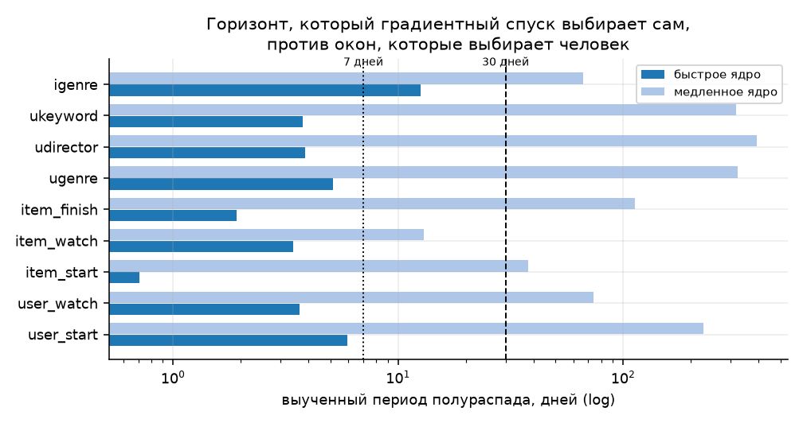
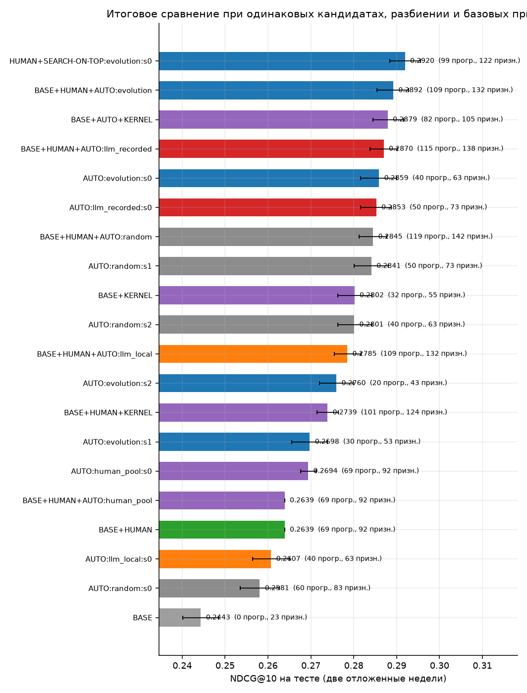
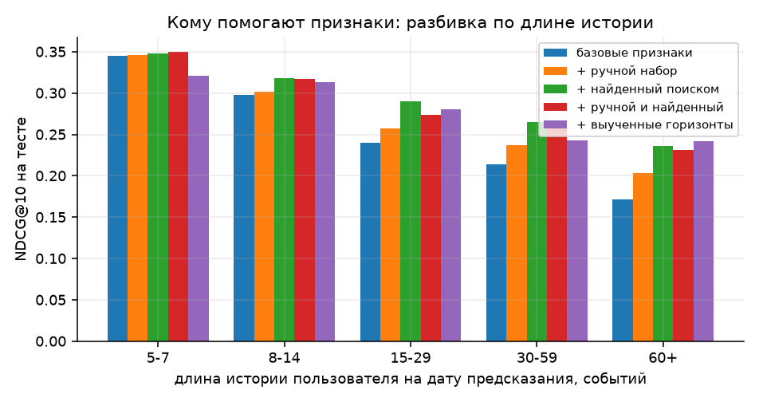
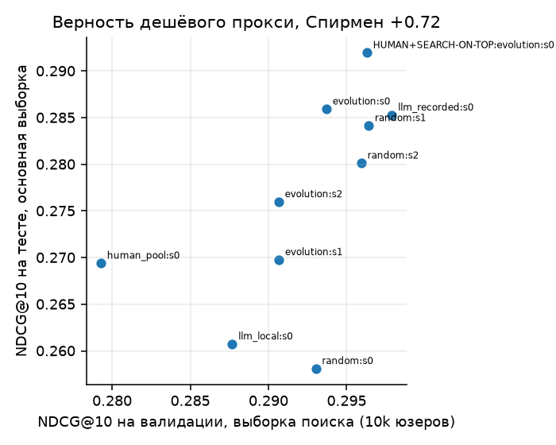

Отчёт по заданию T-Lab 2026, RecSys, задание 1. Датасет — KION от МТС.
Задача — еженедельное ранжирование контента в KION: для даты предсказания отранжировать ~100 кандидатов на пользователя по тому, посмотрит ли он их в следующие семь дней. Двухстадийная схема: четыре генератора кандидатов плюс ранкер на LightGBM LambdaRank. Восемь недельных фолдов, пять на обучение, один на валидацию, два отложенных на тест. Все числа ниже — на тесте, на выборке 40 000 пользователей, 7751 группа с позитивом.
Главный результат: автоматический поиск признаков обходит ручной набор, но лучше всего работает не вместо человека, а поверх него.
| подход | признаков | test NDCG@10 | Δ к ручному набору |
|---|---|---|---|
| только популярность, без обучения | — | 0.2118 | |
| BASE: кандидаты и метаданные | 23 | 0.2443 | −0.0198 |
| ручной набор, 69 программ | 92 | 0.2639 | эталон |
| выученные горизонты, 32 программы | 55 | 0.2802 | +0.0164 |
| LLM-поиск, Opus 5 | 73 | 0.2853 | +0.0211 |
| эволюционный поиск, лучший сид | 63 | 0.2859 | +0.0222 |
| поиск, стартующий с ручного набора | 122 | 0.2920 | +0.0281 |
Шесть вещей, которые стоит прочитать, даже если дальше читать не хочется.
1. Признаки описаны языком, в котором утечка невозможна. Признак — не код, а JSON-программа; компилятор получает только события строго до даты предсказания и проверяет это утверждением. Поэтому придумывание признаков можно доверить машине, не проверяя каждую фичу руками. Утверждение подкреплено шестью автотестами: отравление лога будущим на 433 признаках всех семейств, отказ движка от будущих событий, граница окна на синтетике, детерминизм кандидатов, разрушение метки и синтаксический аудит SQL-рендера каждой программы. Тесты нашли три настоящих бага: неустойчивые тай-брейки в генераторах кандидатов, ошибку в ко-просмотрах и потерю разрядов при суммировании длительностей.
2. Сравнение стратегий сделано при строго одинаковом бюджете, с двумя контрольными плечами: ручной набор, прогнанный через тот же протокол отбора, и систематическая сетка признаков вообще без поиска. Пространство — 109 728 атомарных программ и около 1.8·10¹⁰ с композициями, так что полный перебор исключён.
3. Измерен уровень шума, и половина «значимых» различий им объясняется. Контрольное плечо с тем же самым набором признаков, отличающимся только порядком колонок, дало на тесте +0.0058 с интервалом, не содержащим нуля. Поэтому в отчёте всё, что меньше этого уровня, считается отсутствующим, независимо от доверительного интервала.
4. Ответ на вопрос «почему именно семь дней» получен тремя независимыми способами, и они сошлись. Прямой свип окон: спросу на контент нужно 7 дней (+0.0228, против +0.0055 на тридцати), а вкусу к жанру — 180 дней (+0.0093, против +0.0028 на тридцати). Дискретный поиск сошёлся на тех же горизонтах. Градиентный спуск по обучаемому затуханию дал период полураспада 0.6 дня для спроса на объект и 688 дней для вкуса к жанру — при том что история в данных длиной 163 дня, то есть «вкус не забывается вовсе». Ручной выбор из «7 или 30» промахивается в обе стороны одновременно.
5. Слабая LLM в цикле хуже, чем никакой. Локальная модель на 7 млрд параметров дала 0.2607 — ниже ручного набора: около половины её предложений отсекает валидатор грамматики, и половина бюджета уходит впустую, а два поколения из шести не дали ни одной валидной программы. Большая модель за 15 вызовов не нарушила грамматику ни разу. Выигрыш большой модели — не более высокий потолок, а втрое меньше проверок до того же уровня.
6. Насыщение поиска — сигнал расширить язык, а не бюджет. Поиск вышел на плато и пять блоков подряд не улучшал валидацию. Разбор показал две конструкции, невыразимые в плоской грамматике: агрегат от агрегата и якорь по атрибуту пользователя. Добавленные уже после окончания сравнения, они дали +0.0092 поверх ручного набора, причём почти весь вклад пришёлся на одну простую вещь — спрос среди людей того же пола и достатка за последнюю неделю.
Задание спрашивает, можно ли избавиться от ручного придумывания признаков в рекомендательном ранжировании. Я отвечаю на этот вопрос в три шага.
Сначала собран воспроизводимый двухстадийный пайплайн: генераторы кандидатов плюс ранкер на градиентном бустинге с содержательным ручным набором признаков. Затем признаки описаны типизированным языком программ (DSL). Он устроен так, что утечка из будущего в нём невозможна по построению; проверять каждую фичу ревью не нужно. Благодаря этому придумывание признаков можно доверить машине: языковая модель порождает не код, а программу, и грамматика проверяется до того, как что-либо будет вычислено. Наконец, поиск по этому языку сравнивается при строго одинаковом бюджете между четырьмя стратегиями (случайный поиск, эволюционный поиск, локальная LLM на 7B параметров и большая LLM) и двумя контрольными подходами: ручным набором, прогнанным через тот же протокол отбора, и систематической сеткой признаков вообще без поиска.
Отдельно проверяется буквальный вопрос из условия — «почему именно семь дней».
Вместо жёсткого окна берётся гладкое ядро exp(-λ·возраст), а λ обучается
градиентным спуском. Выученный период полураспада можно прямо сравнить с теми
окнами, которые человек выбирает на глаз.
Какое из направлений выбрано. Из трёх предложенных в условии взято первое — автоматическая генерация и отбор признаков. Графовые и последовательные модели как альтернативы бустингу не исследовались; ALS и ко-просмотры здесь только генерируют кандидатов, одинаково для всех сравниваемых подходов.
Главные выводы собраны в конце отчёта, в разделе «Что сработало и что нет».
KION содержит 5 476 251 просмотр за период с 13 марта по 22 августа 2021 года: 962 179 пользователей, 15 963 единицы контента, демография пользователей и метаданные контента (жанры, страны, студии, режиссёры, актёры, ключевые слова, год выпуска, возрастной рейтинг).
Из watched_pct сделана вложенная воронка типов событий, похожая на
показ → клик → покупку из условия задания:
| тип события | условие | доля событий |
|---|---|---|
start |
любое взаимодействие | 100% |
watch |
просмотрено ≥ 30% | ~51% |
finish |
просмотрено ≥ 90% | ~32% |
Важное свойство датасета, которое меняет постановку. В таблице
взаимодействий ровно одна строка на пару (пользователь, объект) — колонка
называется last_watch_dt. Я это проверил: среди пар (пользователь, объект) из
целевой недели ни одна не встречается в предшествующей истории этого
пользователя. То есть повторное потребление в KION невозможно в принципе.
Из этого следуют два вывода. Первый: «прямые связи» user–item, которые условие подаёт как ценную группу признаков, здесь вырождены — любой такой признак тождественно равен нулю на кандидатах, и вся персонализация идёт через косвенные связи (пользователь → атрибут → объект). Второй: уже просмотренное можно выбрасывать из списка кандидатов. При том же размере списка в 100 позиций это поднимает их recall с 0.3272 до 0.3351 — всего 2.4%, потому что ALS и ко-просмотры и так редко предлагают виденное.
Задача поставлена как еженедельное предсказание: для даты предсказания T
история — это всё строго до T, целевое окно — [T, T+7), метка равна единице,
если пользователь посмотрел объект в целевом окне. Восемь дат идут подряд:
Каждый фолд считает свои признаки по своей истории, поэтому обучающие признаки никогда не видят целевых окон валидации и теста. Признаки валидации видят целевое окно обучения, но для них это прошлое: так же устроен и продакшен.
Железо — ноутбук, поэтому пользователи сэмплируются, но история каждого взятого пользователя сохраняется целиком, как требует условие. Правило отбора намеренно не смотрит ни на что позже первой даты предсказания: берутся пользователи, у которых к 28 июня 2021 было не меньше пяти событий. Таких 146 747. Результаты измеряются на выборке 40 000 пользователей, поиск признаков ведётся на дешёвой выборке 10 000, а перенос проверяется на выборке 100 000. Размеры подобраны так, чтобы самый широкий из сравниваемых наборов признаков помещался в 30 ГБ памяти вместе с копией матрицы, которую делает LightGBM.
Статистики айтемов (популярность, конверсии, тренды) считаются по всей популяции. У живого сервиса эти числа есть целиком, и обрезать их до выборки значило бы искусственно ухудшить условия. Статистики пользователя считаются по его собственной истории.
Кандидаты строятся один раз, на всех 146 747 пользователей, и затем только подмножествуются по пользователям. Благодаря этому все подходы и все масштабы видят буквально одинаковые списки, и сравнение идёт честно. Четыре генератора:
Списки сливаются взвешенной суммой обратных рангов (RRF) и обрезаются до 100 кандидатов на пользователя. Уже просмотренное выбрасывается.
Основная метрика — NDCG@10 внутри списка кандидатов: она изолирует качество ранкера, потому что кандидаты у всех подходов одинаковые. Дополнительно приводится абсолютный NDCG@10, в котором пользователь наказывается за позитивы, не найденные стадией кандидатов, — это число ближе к тому, что увидит продукт. Также считаются MAP@10, Recall@10, ROC-AUC и LogLoss.
Ранжирующие метрики считаются по группам, в которых есть хотя бы один позитив среди кандидатов: без позитивов NDCG не определён. Ранкер (LambdaRank) на таких группах всё равно получает нулевой градиент, поэтому они исключаются и из обучения. Это стандартная практика для двухстадийных схем, но отмечу её прямо.
Это главный инженерный аргумент работы, поэтому он вынесен в отдельный раздел.
Признак в DSL — не код, а JSON-программа. Компилятор программ (FoldEngine)
получает на входе только события строго до даты предсказания, и проверяет
это утверждением в конструкторе. Временное окно реализовано как полуинтервал
[T−w, T). Отсюда следует, что ни одна программа языка не может заглянуть в
будущее. Это свойство движка, и оно распространяется на любую фичу, включая ещё
не придуманные. Поэтому придумывание признаков можно поручить алгоритму или
языковой модели, не проверяя каждую сгенерированную фичу руками.
Утверждение подкреплено пятью автоматическими тестами (tests/test_no_leakage.py):
watched_pct и total_dur, и
синтетические события на 100 дней позже. 433 признака всех семейств
языка — ручные, из систематической сетки, случайные, вложенные,
сегментные и с мягким окном — обязаны совпасть с чистым прогоном побитово.T, должна приводить к ошибке.w обязано посчитать w−1 событий: возраст 0 — это сама дата предсказания,
она относится к целевому окну и в историю не попадает. Проверяется и то, что
самое свежее видимое событие — вчерашнее.Шестой тест — синтаксический, а не поведенческий: каждая программа языка
рендерится в SQL (dsl.to_sql), и проверяется, что условие по времени в запросе
одностороннее. Побочный полезный эффект в том, что любой проверяющий может
прочитать сгенерированный признак как обычный запрос и убедиться в этом сам;
двенадцать самых полезных найденных признаков выписаны в
reports/discovered_features.md.
Отдельный тест (tests/test_engine_equivalence.py) сравнивает быстрый движок с
эталонной реализацией «в лоб» на 250 случайных программах. Быстрый движок
восстанавливает атрибутные агрегаты из разложимых компонент айтемного уровня
(это на порядок дешевле, чем джойнить миллионы событий), и тест следит, чтобы
оптимизация не превратилась в тихую ошибку. Он тоже нашёл реальный баг:
суммы длительностей в Float32 теряли разряды.
Признак записывается как JSON-программа. Атомарная программа — агрегат:
{"kind":"agg","anchor":"attr","via":"genres","event":"watch",
"window":30,"agg":"count","norm":"share_user","pool":"sum"}
Читается так: взять события пользователя за последние 30 дней, в которых просмотрено не меньше 30% контента, оставить те, что относятся к объектам, делящим жанр с кандидатом, посчитать их количество, поделить на общее число событий пользователя за те же 30 дней, а если у кандидата несколько жанров — сложить значения по жанрам.
Поля и их домены:
| поле | значения | смысл |
|---|---|---|
anchor |
user, item, attr, attr_item |
по чему группируем |
via |
9 атрибутов контента | через какой атрибут идёт косвенная связь |
event |
start, watch, finish |
уровень воронки |
window |
1, 3, 7, 14, 30, 60, 90, 180, вся история | горизонт |
agg |
12 функций | count, nuniq_item/user/day, mean/max/std_pct, sum/mean_dur, recency, mean_age, trend |
norm |
нет, log1p, per_day, share_user, share_item, z_in_group, rank_in_group | нормировка |
pool |
max, sum, mean, min | свёртка по значениям атрибута у кандидата |
Два якоря отвечают за разные вещи. attr — это личная косвенная связь: история
самого пользователя, отфильтрованная по общему с кандидатом значению атрибута.
attr_item — поведение толпы внутри этого значения атрибута, то есть «насколько
сейчас горяч этот жанр». Отдельно стоит отметить z_in_group и rank_in_group:
они нормируют признак внутри списка кандидатов одного пользователя. Для
ранжирования это естественная операция, и, как покажут результаты, она и
оказалась самой полезной.
Композиции: ratio считает a / (b + 1), mul считает a · b.
Этим грамматика исчерпывается; по ней и идёт сравнение стратегий. Позже
язык расширяется тремя конструкциями (decay — мягкое окно с обучаемым
затуханием, nested — агрегат от агрегата, segment — якорь по атрибуту
пользователя), но все они появились после того, как сравнение было
проведено, и в нём не участвуют. Почему именно эти три — в разделе «Поиск нашёл
границы собственного языка».
Валидатор отбрасывает заведомо вырожденные комбинации: nuniq_user при
группировке по одному пользователю всегда равен единице, nuniq_item при
группировке по одному объекту — тоже; per_day и доли имеют смысл только для
счётных агрегатов; share_user требует якоря с пользователем, share_item — с
объектом.
Размер пространства. Валидных атомарных программ — 109 728. С композициями получается около 1.8·10¹⁰. Перебрать это нельзя даже близко, и отсюда вся постановка: поиск обязан быть избирательным.
Сравнение честно ровно настолько, насколько силён baseline, поэтому его состав приведён целиком — судите сами. 69 программ, написанных до того, как был запущен хоть один поиск, и ни разу после этого не правленных:
| срез | состав |
|---|---|
| якорь | пользователь 22, объект 18, косвенная связь 19, толпа внутри атрибута 5, отношения 5 |
| окно | вся история 28, 30 дней 17, 7 дней 15, остальные (1, 14, 90) 4 |
| агрегат | count 43, mean/max_pct 5, nuniq_item/user/day 8, recency 3, trend 2, длительности 3 |
| событие | start 56, watch 6, finish 2 |
| атрибут | жанры 14, остальные восемь по 1–2 |
| нормировка | без неё 53, доля от активности 5, на день 4, внутри списка 2 |
Набор покрывает все группы признаков, которые перечисляет условие задания: активность и глубина просмотра пользователя, популярность и конверсии объекта, косвенные связи через все девять атрибутов контента, статистики толпы внутри атрибута, отношения между уровнями воронки, тренды и давность.
Две вещи в этом составе стоит отметить заранее, потому что они и окажутся в центре результатов. Окна взяты круглые: семь дней, тридцать, вся история. Троек, шестидесяток и ста восьмидесяти там нет, хотя язык их допускает. И нормировка внутри списка кандидатов применена всего к двум программам из 69. Ни то ни другое не сделано нарочно: так пишет признаки человек, у которого есть ограниченное время и разумные привычки.
Это ядро экспериментального сравнения. Все стратегии работают в одном и том же цикле; различается только то, как предлагаются программы.
Единица бюджета — одна новая, скомпилированная и проэкранированная программа. Поколение устроено так:
Поколений 15, то есть бюджет — 480 программ и ровно 30 обучений прокси-модели у каждой стратегии. Прокси-модель одна и та же: LightGBM LambdaRank, lr 0.12, 31 лист, до 300 деревьев с ранней остановкой. Тестовые фолды внутри поиска не читаются вообще.
Двухступенчатая схема «дешёвое экранирование, затем точная проверка» — это то, как устроены промышленные системы автоматического построения признаков. Она же делает бюджет сопоставимым: стратегия не может выиграть за счёт того, что ей дали больше обучений.
Стратегии:
Что видит предложитель на каждом шаге: грамматику языка, описание домена, принятый набор, 18 лучших программ с их gain, программы с нулевым gain («так больше не предлагай») и текущий NDCG@10 на валидации. Больше ничего — в частности, никакой информации с тестовых фолдов.
Ручной признак фиксирует окно: «покупки за последние 7 дней». Семёрка — догадка.
Чтобы снять догадку, жёсткое окно заменяется гладким ядром: вклад события
возрастом d дней равен exp(−λ·d), а λ — обучаемый параметр.
Всё раскладывается в произведение разреженных матриц. Для отношения r суточные
счётчики событий живут в небольшой матрице S_r (пользователь × день, объект ×
день, (пользователь, значение атрибута) × день), а разреженное назначение P_r
сопоставляет строке-кандидату те ключи, на которые она опирается. Признак равен
f_r = P_r · (S_r · exp(−λ_r · d))
Это дёшево, точно и дифференцируемо по λ. Девять отношений, по два ядра на
каждое (быстрое и медленное), поверх — маленький MLP, обучение листовым
софтмаксом внутри списка кандидатов. Выученный период полураспада ln2/λ
сравнивается напрямую с окнами, которые ставит человек.
Дальше выученные λ подставляются обратно: признаки-ядра отдаются тому же бустингу вместо и вместе с ручными окнами. Так проверяется не только то, какой горизонт «хочет» каждое отношение, но и приносит ли это пользу на практике.
Независимо от ядер сделан прямой свип: для каждого из восьми отношений один и тот же счётный признак добавляется к базовой модели со всеми девятью окнами по одному, и записывается прирост на валидации. Это эмпирический ответ на вопрос «почему именно семь дней» в самой наглядной форме.
| дата предсказания | роль | ранжируемых юзеров | достижимых позитивов | попало в кандидаты | recall кандидатов | групп с позитивом | строк |
|---|---|---|---|---|---|---|---|
| 2021-06-28 | train | 146 747 | 145 121 | 71 414 | 0.492 | 39 647 | 3 964 700 |
| 2021-07-05 | train | 146 747 | 110 154 | 41 602 | 0.378 | 25 394 | 2 539 400 |
| 2021-07-12 | train | 146 747 | 101 222 | 37 662 | 0.372 | 22 793 | 2 279 300 |
| 2021-07-19 | train | 146 747 | 91 814 | 34 359 | 0.374 | 20 488 | 2 048 800 |
| 2021-07-26 | train | 146 747 | 89 000 | 33 076 | 0.372 | 19 978 | 1 997 800 |
| 2021-08-02 | val | 146 747 | 83 036 | 31 239 | 0.376 | 18 524 | 1 852 400 |
| 2021-08-09 | test | 146 747 | 80 275 | 27 534 | 0.343 | 16 854 | 1 685 400 |
| 2021-08-16 | test | 146 747 | 79 243 | 28 879 | 0.364 | 17 325 | 1 732 500 |
| отношение | лучшее окно, дней | прирост NDCG@10 | прирост при 7 днях | прирост при 30 днях | что теряет ручной выбор |
|---|---|---|---|---|---|
| user activity | 30 | +0.0047 | +0.0034 | +0.0047 | +0.0000 |
| user watches | 90 | +0.0066 | +0.0028 | +0.0035 | +0.0031 |
| item popularity | 7 | +0.0228 | +0.0228 | +0.0055 | +0.0000 |
| item watches | 7 | +0.0142 | +0.0142 | +0.0027 | +0.0000 |
| user x genre | 180 | +0.0093 | +0.0036 | +0.0028 | +0.0057 |
| user x director | 90 | +0.0044 | +0.0038 | +0.0028 | +0.0006 |
| user x keyword | 60 | +0.0075 | +0.0021 | +0.0029 | +0.0046 |
| genre popularity | 180 | +0.0072 | +0.0020 | +0.0028 | +0.0044 |
Базовая модель без DSL-признаков: NDCG@10 = 0.2584 на валидации.
| стратегия | сидов | программ | val@128 | val@256 | val финал | признаков | мин. поиска | вызовов LLM | отбраковано грамматикой |
|---|---|---|---|---|---|---|---|---|---|
| эволюционный поиск | 3 | 480 | 0.2881 | 0.2917 | 0.2917 ± 0.0014 | 30 | 11.5 | — | — |
| ручной набор, тот же протокол отбора | 1 | 69 | 0.2793 | 0.2793 | 0.2793 | 69 | 0.8 | — | — |
| LLM-поиск, Qwen2.5-Coder 7B (локально) | 1 | 82 | 0.2877 | 0.2877 | 0.2877 | 40 | 44.3 | 12 | 65% |
| LLM-поиск, Opus 5 | 1 | 421 | 0.2907 | 0.2979 | 0.2979 | 50 | 14.0 | 15 | 0% |
| случайный поиск | 3 | 480 | 0.2893 | 0.2933 | 0.2951 ± 0.0015 | 50 | 10.9 | — | — |
Бюджет у всех стратегий одинаковый: 15 поколений по 32 программы и ровно 30 обучений прокси-модели. Ручной набор прогнан через тот же протокол, но у него всего 69 программ, поэтому его строка короче.
| стратегия | сид | val с ручным набором | val после поиска | прирост | добавлено признаков | программ |
|---|---|---|---|---|---|---|
| эволюционный поиск | 0 | 0.28457737401649075 | 0.2963 | +0.0117 | 30 | 480 |
| набор | прогр. | призн. | val NDCG@10 | test NDCG@10 | test NDCG@10 абс. | MAP@10 | Recall@10 | AUC | Δ к BASE+HUMAN, 95% ДИ | доля gain у DSL-призн. | сек. призн./обуч. |
|---|---|---|---|---|---|---|---|---|---|---|---|
| HUMAN+SEARCH-ON-TOP:evolution:s0 | 99 | 122 | 0.3056 | 0.2920 | 0.1417 | 0.2155 | 0.4659 | 0.7911 | +0.0281 [+0.0245; +0.0317] | 0.81 | 114/99 |
| BASE+HUMAN+AUTO:evolution | 109 | 132 | 0.3040 | 0.2892 | 0.1401 | 0.2124 | 0.4656 | 0.7907 | +0.0252 [+0.0214; +0.0288] | 0.82 | 98/127 |
| BASE+AUTO+KERNEL | 82 | 105 | 0.3052 | 0.2879 | 0.1396 | 0.2108 | 0.4653 | 0.7914 | +0.0239 [+0.0204; +0.0276] | 0.82 | 191/87 |
| BASE+HUMAN+AUTO:llm_recorded | 115 | 138 | 0.3013 | 0.2870 | 0.1393 | 0.2106 | 0.4617 | 0.7909 | +0.0229 [+0.0197; +0.0261] | 0.83 | 159/88 |
| AUTO:evolution:s0 | 40 | 63 | 0.3006 | 0.2859 | 0.1388 | 0.2106 | 0.4572 | 0.7813 | +0.0222 [+0.0179; +0.0263] | 0.77 | 33/82 |
| AUTO:llm_recorded:s0 | 50 | 73 | 0.3048 | 0.2853 | 0.1383 | 0.2092 | 0.4592 | 0.7897 | +0.0211 [+0.0174; +0.0246] | 0.82 | 82/82 |
| BASE+HUMAN+AUTO:random | 119 | 142 | 0.3012 | 0.2845 | 0.1383 | 0.2080 | 0.4610 | 0.7897 | +0.0204 [+0.0171; +0.0236] | 0.83 | 197/161 |
| AUTO:random:s1 | 50 | 73 | 0.3038 | 0.2841 | 0.1377 | 0.2092 | 0.4537 | 0.7838 | +0.0197 [+0.0157; +0.0236] | 0.59 | 106/55 |
| BASE+KERNEL | 32 | 55 | 0.2983 | 0.2802 | 0.1359 | 0.2038 | 0.4550 | 0.7868 | +0.0164 [+0.0125; +0.0205] | 0.77 | 113/68 |
| AUTO:random:s2 | 40 | 63 | 0.3015 | 0.2801 | 0.1354 | 0.2055 | 0.4487 | 0.7832 | +0.0165 [+0.0127; +0.0207] | 0.73 | 77/67 |
| BASE+HUMAN+AUTO:llm_local | 109 | 132 | 0.2870 | 0.2785 | 0.1352 | 0.2023 | 0.4536 | 0.7879 | +0.0140 [+0.0110; +0.0172] | 0.82 | 250/112 |
| AUTO:evolution:s2 | 20 | 43 | 0.2970 | 0.2760 | 0.1337 | 0.2038 | 0.4380 | 0.7794 | +0.0118 [+0.0078; +0.0156] | 0.68 | 11/41 |
| BASE+HUMAN+KERNEL | 101 | 124 | 0.2884 | 0.2739 | 0.1329 | 0.1959 | 0.4587 | 0.7894 | +0.0102 [+0.0077; +0.0128] | 0.82 | 56/100 |
| AUTO:evolution:s1 | 30 | 53 | 0.3013 | 0.2698 | 0.1308 | 0.1948 | 0.4415 | 0.7788 | +0.0059 [+0.0017; +0.0100] | 0.43 | 23/59 |
| AUTO:human_pool:s0 | 69 | 92 | 0.2874 | 0.2694 | 0.1313 | 0.1931 | 0.4496 | 0.7867 | +0.0058 [+0.0040; +0.0076] | 0.81 | 42/107 |
| BASE+HUMAN | 69 | 92 | 0.2876 | 0.2639 | 0.1284 | 0.1875 | 0.4457 | 0.7860 | — (эталон) | 0.81 | 44/81 |
| BASE+HUMAN+AUTO:human_pool | 69 | 92 | 0.2876 | 0.2639 | 0.1284 | 0.1875 | 0.4457 | 0.7860 | +0.0000 [+0.0000; +0.0000] | 0.81 | 56/90 |
| AUTO:llm_local:s0 | 40 | 63 | 0.2995 | 0.2607 | 0.1268 | 0.1890 | 0.4235 | 0.7700 | -0.0036 [-0.0079; +0.0007] | 0.35 | 163/67 |
| AUTO:random:s0 | 60 | 83 | 0.2629 | 0.2581 | 0.1255 | 0.1878 | 0.4205 | 0.7592 | -0.0051 [-0.0096; -0.0006] | 0.59 | 65/19 |
| BASE | 0 | 23 | 0.2671 | 0.2443 | 0.1185 | 0.1800 | 0.3868 | 0.7510 | -0.0198 [-0.0240; -0.0156] | 0.00 | 0/27 |
| набор | прогр. | призн. | val NDCG@10 | test NDCG@10 | test NDCG@10 абс. | MAP@10 | Recall@10 | AUC | Δ к BASE+HUMAN, 95% ДИ | доля gain у DSL-призн. | сек. призн./обуч. |
|---|---|---|---|---|---|---|---|---|---|---|---|
| AUTO:evolution:s0 | 40 | 63 | 0.3022 | 0.2864 | 0.1393 | 0.2108 | 0.4572 | 0.7813 | — (эталон) | 0.78 | 48/107 |
| BASE+HUMAN | 69 | 92 | 0.2943 | 0.2664 | 0.1304 | 0.1896 | 0.4475 | 0.7857 | — (эталон) | 0.80 | 74/143 |
| AUTO:human_pool:s0 | 69 | 92 | 0.2922 | 0.2632 | 0.1287 | 0.1869 | 0.4428 | 0.7848 | — (эталон) | 0.80 | 68/181 |
| BASE | 0 | 23 | 0.2694 | 0.2454 | 0.1196 | 0.1816 | 0.3847 | 0.7488 | — (эталон) | 0.00 | 0/60 |
| правило | что это | test NDCG@10 | test NDCG@10 абс. | Recall@10 |
|---|---|---|---|---|
| rrf | rank fusion of the four generators | 0.2273 | 0.1098 | 0.3696 |
| als | ALS score alone | 0.1194 | 0.0570 | 0.2041 |
| popularity | 14-day popularity alone | 0.2118 | 0.1030 | 0.3676 |
| отношение | быстрое ядро, дней полураспада | медленное ядро, дней |
|---|---|---|
| активность пользователя | 6.53 | 816.4 |
| глубокие просмотры пользователя | 1.75 | 494.81 |
| спрос на объект | 0.63 | 19.2 |
| глубокие просмотры объекта | 1.41 | 18.94 |
| досмотры объекта | 1.88 | 240.99 |
| вкус к жанру | 9.03 | 688.46 |
| вкус к режиссёру | 1.9 | 64.52 |
| вкус к теме | 2.82 | 210.76 |
| спрос на жанр у всех | 48.54 | 170.78 |
| набор | признаков | val NDCG@10 | test NDCG@10 | test абс. |
|---|---|---|---|---|
| BASE | 23 | 0.2609 | 0.2502 | 0.1204 |
| BASE+KERNEL | 41 | 0.2912 | 0.2744 | 0.1318 |
| BASE+HUMAN | 92 | 0.2766 | 0.2647 | 0.1275 |
| BASE+HUMAN+KERNEL | 110 | 0.2761 | 0.2694 | 0.1299 |
Модель только на ядрах, без бустинга: test NDCG@10 = 0.2516.
| набор | 40 000 (основная) | 70 000 юзеров | 100 000 юзеров |
|---|---|---|---|
| BASE | 0.2443 | 0.2454 | 0.2459 |
| BASE+HUMAN | 0.2639 | 0.2664 | 0.2709 |
| AUTO:evolution:s0 | 0.2859 | 0.2864 | 0.2809 |
| AUTO:human_pool:s0 | 0.2694 | 0.2632 | 0.2690 |
Выборки вложены не полностью, поэтому колонки сравнивать между собой нужно только внутри одной строки относительно ручного набора. Полный набор из 16 плеч на 70 000 и 100 000 не поместился в память (процесс доходил до 25 ГБ), поэтому здесь только четыре ключевых: база, ручной набор, лучший найденный и контроль на шум.
| набор | прогр. | призн. | val NDCG@10 | test NDCG@10 | призн., с |
|---|---|---|---|---|---|
| BASE | 0 | 23 | 0.2609 | 0.2502 | 0 |
| BASE+HUMAN | 69 | 92 | 0.2766 | 0.2647 | 13 |
| BASE+GRID | 480 | 503 | 0.2888 | 0.2683 | 157 |
Измерено на поисковой выборке 10000 пользователей, где сетка помещается по времени и памяти. Сетка содержит те же 480 программ, что составляют бюджет одной стратегии поиска, но перечисленные систематически, без отбора.
| подход | прогр. | призн. | поиск, мин | программ оценено | вызовов LLM / ток. | призн., с | обучение, с | деревьев |
|---|---|---|---|---|---|---|---|---|
| ручной набор | 69 | 92 | — | — | — | 44 | 81 | 300 |
| эволюционный поиск (сид 0) | 40 | 63 | 8.7 | 480 | — | 33 | 82 | 350 |
| эволюционный поиск (сид 1) | 30 | 53 | 21.5 | 480 | — | 23 | 59 | 287 |
| эволюционный поиск (сид 2) | 20 | 43 | 4.2 | 480 | — | 11 | 41 | 181 |
| ручной набор, тот же протокол отбора (сид 0) | 69 | 92 | 0.8 | 69 | — | 42 | 107 | 438 |
| LLM-поиск, Qwen2.5-Coder 7B (локально) (сид 0) | 40 | 63 | 44.3 | 82 | 12/18093 | 163 | 67 | 277 |
| LLM-поиск, Opus 5 (сид 0) | 50 | 73 | 14.0 | 421 | 15/— | 82 | 82 | 301 |
| случайный поиск (сид 0) | 60 | 83 | 9.8 | 480 | — | 65 | 19 | 3 |
| случайный поиск (сид 1) | 50 | 73 | 15.3 | 480 | — | 106 | 55 | 163 |
| случайный поиск (сид 2) | 40 | 63 | 7.5 | 480 | — | 77 | 67 | 282 |
| HUMAN+SEARCH-ON-TOP:evolution:s0 (сид 0) | 99 | 122 | — | — | — | 114 | 99 | 290 |
| BASE+HUMAN+AUTO:evolution | 109 | 132 | — | — | — | 98 | 127 | 368 |
| BASE+HUMAN+AUTO:human_pool | 69 | 92 | — | — | — | 56 | 90 | 300 |
| BASE+HUMAN+AUTO:llm_local | 109 | 132 | — | — | — | 250 | 112 | 202 |
| BASE+HUMAN+AUTO:llm_recorded | 115 | 138 | — | — | — | 159 | 88 | 191 |
| BASE+HUMAN+AUTO:random | 119 | 142 | — | — | — | 197 | 161 | 434 |
| BASE+KERNEL | 32 | 55 | — | — | — | 113 | 68 | 316 |
| BASE+HUMAN+KERNEL | 101 | 124 | — | — | — | 56 | 100 | 298 |
| BASE+AUTO+KERNEL | 82 | 105 | — | — | — | 191 | 87 | 265 |
Счёт признаков и обучение измерены на основной выборке, поиск — на дешёвой выборке 10 000 пользователей. Время счёта признаков — это и есть стоимость подхода в продакшене: его платят на каждом перестроении витрины.
Добавлено 62 программ двух семейств — агрегат от агрегата («популярнее ли этот объект того, что пользователь обычно смотрит») и якорь по сегменту пользователя («популярно среди похожих по демографии»).
| набор | прогр. | призн. | val NDCG@10 | test NDCG@10 | доля gain у новых семейств |
|---|---|---|---|---|---|
| BASE+HUMAN | 69 | 92 | 0.2876 | 0.2639 | 0.00 |
| BASE+HUMAN+EXT | 131 | 154 | 0.2935 | 0.2730 | 0.36 |
| BASE+AUTO | 50 | 73 | 0.3048 | 0.2853 | 0.00 |
| BASE+AUTO+EXT | 112 | 135 | 0.3070 | 0.2905 | 0.19 |
| BASE+HUMAN+AUTO | 115 | 138 | 0.3013 | 0.2870 | 0.00 |
| BASE+HUMAN+AUTO+EXT | 177 | 200 | 0.3045 | 0.2896 | 0.18 |
| сравнение | Δ NDCG@10 | 95% ДИ | доля побед |
|---|---|---|---|
| BASE+HUMAN+EXT vs BASE+HUMAN | +0.0092 | [+0.0070; +0.0115] | 1.000 |
| BASE+AUTO+EXT vs BASE+AUTO | +0.0055 | [+0.0033; +0.0077] | 1.000 |
| BASE+HUMAN+AUTO+EXT vs BASE+HUMAN+AUTO | +0.0030 | [+0.0009; +0.0053] | 0.997 |
| признак | вклад по сплитам |
|---|---|
| seg_sex_sta_w7_count_z_in_group | 219 970 |
| seg_inco_sta_w7_count_z_in_group | 147 133 |
| seg_sex_sta_w7_nuniq_user_z_in_group | 33 757 |
| nest_item_sta_all_mean_age_mean_sta_all_diff | 23 420 |
| seg_age_sta_w7_count_z_in_group | 20 331 |
| nest_item_sta_w7_count_log1p_mean_sta_w30_diff | 16 882 |
| seg_sex_sta_w14_trend | 14 499 |
| nest_item_sta_w7_count_log1p_mean_sta_all_diff | 9 392 |
| набор | 5-7 событий | 8-14 событий | 15-29 событий | 30-59 событий | 60+ событий |
|---|---|---|---|---|---|
| базовые признаки | 0.3447 | 0.2980 | 0.2400 | 0.2135 | 0.1712 |
| + ручной набор | 0.3462 | 0.3013 | 0.2570 | 0.2372 | 0.2036 |
| + найденный поиском | 0.3481 | 0.3078 | 0.2822 | 0.2596 | 0.2487 |
| + ручной и найденный | 0.3500 | 0.3167 | 0.2742 | 0.2629 | 0.2309 |
| + выученные горизонты | 0.3210 | 0.3135 | 0.2801 | 0.2424 | 0.2418 |
Размеры групп: 5-7 — 192, 8-14 — 566, 15-29 — 615, 30-59 — 411, 60+ — 151.
| набор | 1 | 3 | 7 | 14 | 30 | 60 | 90 | 180 | вся история |
|---|---|---|---|---|---|---|---|---|---|
| ручной набор | 1 | 0 | 17 | 2 | 23 | 0 | 1 | 0 | 30 |
| evolution | 2 | 1 | 6 | 0 | 2 | 4 | 6 | 3 | 3 |
| human_pool | 1 | 0 | 17 | 2 | 23 | 0 | 1 | 0 | 30 |
| llm_local | 0 | 1 | 2 | 2 | 9 | 8 | 12 | 5 | 1 |
| llm_recorded | 0 | 11 | 13 | 0 | 11 | 0 | 0 | 0 | 26 |
| random | 0 | 5 | 5 | 3 | 4 | 9 | 9 | 4 | 9 |
Корреляция Спирмена между NDCG@10 на валидации выборки поиска (10 000 юзеров) и NDCG@10 на тесте основной выборки по 10 найденным наборам: +0.72 (p = 0.019).

Рост качества на валидации по мере расходования бюджета. Полоса — разброс по сидам.

Прирост от одного счётного признака при разных окнах, по отношениям. Звезда — оптимум.

Распределение выбранных горизонтов: ручной набор против найденных поиском.

Периоды полураспада, выученные градиентным спуском, против окон 7 и 30 дней.

Итоговое сравнение на двух отложенных неделях. Усы — 95% доверительный интервал парного бутстрэпа относительно ручного набора.

NDCG@10 в разбивке по длине истории пользователя.

Насколько валидация на выборке поиска предсказывает тест на основной выборке.
На валидации, при одинаковом бюджете в 480 предложенных программ и ровно 30 обучений прокси-модели, картина такая: LLM-поиск 0.2979, случайный поиск 0.2951 ± 0.0016 по трём сидам, эволюционный 0.2917 ± 0.0014 по трём сидам, ручной набор через тот же протокол отбора 0.2793, базовая модель 0.2584.
Отсюда два разных утверждения, и их важно не путать.
По финальному значению преимущество LLM невелико. Разница с лучшим случайным прогоном — порядка одной-двух стандартных ошибок разброса по сидам. С одним прогоном большой модели утверждать, что она даёт более высокий потолок, нельзя, и я этого не утверждаю.
По скорости разрыв заметный. Уровня, которого случайный поиск достигает примерно к 290 предложенным программам, плечо с большой моделью достигает примерно к 128 — втрое дешевле по числу вычисленных и проверенных признаков. Своего максимума оно достигает к 190 программам и дальше не растёт, израсходовав в итоге даже меньше бюджета, чем остальные (421 программа вместо 480, из-за дублей с уже опробованными).
Если переводить это в деньги: на реальном датасете один цикл «посчитать признак и проверить его» стоит минуты процессорного времени, а вызов модели — центы. Экономия втрое по числу проверок окупает стоимость модели с запасом. Но рассчитывать, что модель найдёт принципиально недостижимое для перебора, по этим данным оснований нет.
Контроль на справедливость сработал. Поиск имеет право подстраиваться под валидацию, а ручной набор писался вслепую, и это могло бы объяснить весь разрыв. Чтобы это проверить, 69 ручных программ прогнаны через точно такой же цикл принятия блоков. Все три блока приняты, итог 0.2793 — доступ к валидации ручному набору не дал ничего. Значит разрыв создаётся содержанием найденных признаков; процедура отбора здесь ни при чём.
Прежде чем сравнивать подходы на тесте, нужно знать, какая разница вообще что-то значит. Парный бутстрэп по пользователям меряет разброс выборки пользователей, но не меряет разброс обучения модели, а он здесь есть: LightGBM сэмплирует признаки и строки, и результат зависит в том числе от порядка колонок в матрице.
Это вскрылось случайно. Контрольное плечо «ручной набор через тот же протокол отбора» приняло все 69 программ, то есть его набор признаков совпадает с ручным — отличается только порядок, в котором программы попали в матрицу. На тесте оно дало +0.0058 с интервалом [+0.0040; +0.0076], который уверенно не содержит нуля. Бутстрэп объявил значимым эффект, которого не существует.
Поэтому уровень шума измерен отдельно: ручной набор обучен четырьмя разными сидами бустинга на одних и тех же признаках.
| сид | test NDCG@10 | AUC |
|---|---|---|
| 0 | 0.2656 | 0.7865 |
| 1 | 0.2640 | 0.7856 |
| 2 | 0.2667 | 0.7866 |
| 3 | 0.2659 | 0.7864 |
Размах 0.0027, стандартное отклонение 0.0010. И самое важное: из шести попарных сравнений между этими четырьмя моделями бутстрэп назвал значимыми три — при том что набор признаков во всех четырёх идентичен. Например, сиды 1 и 2 отличаются на +0.0031 с интервалом [+0.0015; +0.0047].
Итого два источника шума, не связанных с качеством признаков: смена сида бустинга даёт до 0.003, перестановка колонок — до 0.006. За рабочий порог в этом отчёте взят больший из них: всё, что меньше 0.006, считается отсутствующим, независимо от того, что показывает доверительный интервал.
Отсюда же практическая рекомендация для любой похожей работы: доверительный интервал по пользователям — необходимое, но недостаточное условие. Без контроля на повторный запуск той же модели примерно половину «значимых» улучшений можно получить из воздуха.
Полная таблица — в разделе результатов. Коротко, с поправкой на уровень шума, относительно ручного набора:
| подход | Δ NDCG@10 | как читать |
|---|---|---|
| ручной набор + поиск поверх него | +0.0281 | надёжно |
| ручной + найденный, объединение | +0.0252 | надёжно |
| найденный + выученные горизонты | +0.0239 | надёжно |
| эволюционный поиск, лучший сид | +0.0222 | надёжно |
| LLM-поиск, Opus 5 | +0.0211 | надёжно |
| только выученные горизонты, 55 признаков | +0.0164 | надёжно |
| эволюционный поиск, худший сид | +0.0059 | на уровне шума |
| тот же ручной набор, другой порядок колонок | +0.0058 | это и есть шум |
| локальная модель 7B | −0.0036 | хуже человека |
| случайный поиск, худший сид | −0.0051 | хуже человека |
Четыре вывода.
Автоматический поиск обходит человека, и уверенно. Лучшие найденные наборы дают прирост в три-четыре раза больше уровня шума, причём признаков в них меньше: 63–73 программы против 69 ручных, а у плеча с выученными горизонтами вообще 32.
Но лучший результат — не замена человека, а дополнение к нему. Поиск, стартующий с ручного набора, даёт +0.0281 — больше, чем любой набор по отдельности. Человеческие и найденные признаки несут разную информацию: человек хорошо покрывает ширину (все девять атрибутов, вся воронка), поиск хорошо находит правильную форму и горизонт для немногих самых сильных сигналов.
Слабая модель в цикле хуже, чем никакой. Локальная семимиллиардная модель дала результат ниже ручного набора. Причина не в том, что её идеи плохи, а в том, что около половины её предложений отсеивает валидатор грамматики, и половина бюджета уходит впустую. Большая модель за те же 15 вызовов не нарушила грамматику ни разу.
Случайный поиск работает, но на него нельзя положиться с одной попытки. Три сида дали на тесте 0.2581, 0.2841 и 0.2801: разброс 0.026 — вчетверо больше уровня шума. Худший сид оказался хуже человека, два других — заметно лучше. При этом на валидации поисковой выборки этот же худший сид выглядел нормально (0.2930), то есть провал виден только после переноса на большую выборку.
Поиск признаков вёлся на дешёвой выборке 10 000 пользователей, и условие задания прямо предупреждает, что такие результаты могут не обобщиться. Проверка сделана на трёх масштабах: 40 000 (основной), 70 000 и 100 000 пользователей.
| набор | 40k | 70k | 100k |
|---|---|---|---|
| BASE | 0.2443 | 0.2454 | 0.2459 |
| ручной набор | 0.2639 | 0.2664 | 0.2709 |
| найденный поиском | 0.2859 | 0.2864 | 0.2809 |
| контроль на шум | 0.2694 | 0.2632 | 0.2690 |
| преимущество поиска | +0.0222 | +0.0200 | +0.0100 |
Преимущество сохраняется на всех трёх масштабах и везде остаётся выше уровня шума. Но интереснее не это, а что именно меняется с ростом выборки.
Найденный набор почти не реагирует: 0.2859, 0.2864, 0.2809 — он фактически на своём потолке уже при сорока тысячах. А ручной растёт монотонно: 0.2639, 0.2664, 0.2709. То есть лишние данные достаются в основном ручным признакам.
Объяснение простое и проверяемое по составу наборов. Ручной набор широкий и редкий: 69 программ размазаны по всем девяти атрибутам контента, по всей воронке и по всем горизонтам, и многим из них просто не хватает данных — признак «сколько раз пользователь смотрел этого режиссёра» на сорока тысячах пользователей разрежен, на ста тысячах наполняется. Найденный набор, наоборот, узкий и плотный: поиск сошёлся на небольшом числе сильных сигналов (относительная популярность за три-семь дней, доли вкуса по жанрам и актёрам), которые насыщаются рано.
Практический вывод для такой схемы: поиск на дешёвой выборке переносится, но его преимущество над человеком со временем будет сокращаться по мере роста данных. Это не отменяет выигрыша, но объясняет, почему лучший результат во всей работе даёт не замена человека поиском, а поиск поверх человека.
Честная оговорка: полный набор из шестнадцати плеч на 70 000 и 100 000 пользователей в память ноутбука не поместился — процесс доходил до 25 ГБ и снимался системой. Поэтому на больших масштабах измерены только четыре ключевых плеча: база, ручной набор, лучший найденный и контроль на шум. Выборки при этом не вложены друг в друга, так что сравнивать колонки между собой можно только внутри строки, относительно ручного набора.
В KION нет повторного потребления, поэтому прямые связи user–item — группа, которую условие подаёт как ценную, — здесь тождественно нулевые. Подробности в разделе о данных; здесь важен переносимый вывод: прежде чем строить группы признаков по чек-листу, стоит посмотреть, что в данных вообще выразимо.
Все четыре стратегии поиска независимо сошлись на одном семействе: счётчик
недавнего спроса на объект, нормированный внутри списка кандидатов одного
пользователя (z_in_group или rank_in_group). У лучших таких программ
вклад по сплитам на порядок выше, чем у всего остального.
Это тонкий момент, который легко упустить при ручном проектировании. Модель обучается попарному ранжированию внутри группы, и ей важно не то, что объект популярен вообще, а то, что он популярнее остальных кандидатов этого пользователя. Абсолютное значение популярности несёт ту же информацию, но в форме, из которой дереву приходится её извлекать сплитами, своими для каждого пользовательского профиля.
В ручном наборе такая нормировка была — но применённая к счётчику показов за семь дней. Поиск нашёл, что лучше работает число уникальных пользователей за три дня. То есть человек угадал форму признака, но не угадал ни агрегат, ни окно, а разница между этими вариантами в разы больше, чем между наличием и отсутствием самой формы.
В принятых наборах почти нет программ с якорем user. Причина структурная: в
listwise-ранжировании внутри группы такой признак — константа, и упорядочить
кандидатов он не может. Он работает только через взаимодействия с айтемными
признаками, и именно в такой форме поиск его и нашёл: произведение активности
пользователя на относительную популярность объекта попало в пятёрку лучших
программ по вкладу.
Это объясняет, почему добрая половина типового ручного набора — агрегаты активности пользователя — в двухстадийной схеме с ранжированием внутри группы почти не окупается.
Блок с восемью произведениями «пользовательская величина × относительная популярность» получил высокие оценки на экранировании, но был отклонён: на валидации качество не выросло. Объяснение простое — ансамбль деревьев строит произведения сам, и подавать их готовыми имеет смысл только тогда, когда нужное произведение требует слишком многих сплитов. Полезными оказались не произведения, а отношения: конверсии между уровнями воронки и отношения одной и той же величины на двух горизонтах («доля месячного охвата, набранная за три дня»).
Практический вывод: при автоматической генерации признаков композиции типа
mul почти не нужны, а ratio нужны.
К середине бюджета плечо с большой моделью перестало улучшать валидацию: пять блоков подряд отклонены. Разбор того, чего не хватало, дал два семейства, которые в плоском языке невыразимы в принципе:
Оба семейства добавлены как расширение языка и измерены отдельно, уже вне сравнения стратегий, чтобы не менять условия задним числом. Результаты — в таблице расширения языка.
Это, пожалуй, самый интересный методологический результат работы. Польза автоматического поиска не сводится к тому, что он находит хорошие признаки. Его насыщение — измеримый сигнал о том, что упёрлись в выразительность языка, и добавлять надо конструкции, а не часы счёта.
Средняя метрика скрывает то, что прирост распределён крайне неравномерно. Разбивка по длине истории пользователя на дату предсказания:
| набор | 5–7 событий | 8–14 | 15–29 | 30–59 | 60+ |
|---|---|---|---|---|---|
| базовые признаки | 0.345 | 0.298 | 0.240 | 0.214 | 0.171 |
| + ручной набор | 0.346 | 0.301 | 0.257 | 0.237 | 0.204 |
| + найденный поиском | 0.348 | 0.308 | 0.282 | 0.260 | 0.249 |
| + ручной и найденный | 0.350 | 0.317 | 0.274 | 0.263 | 0.231 |
У пользователей с пятью-семью событиями все четыре набора дают практически одно и то же: 0.345 против 0.348, то есть разница меньше уровня шума. Персонализировать там нечего, и работает популярность, которая уже есть в базовых признаках. У пользователей с шестьюдесятью и более событиями разрыв между ручным и найденным набором достигает +0.045 — в двадцать раз больше, чем на новичках.
Отсюда практический вывод: выигрыш от автоматического поиска признаков пропорционален тому, сколько про пользователя вообще известно. На сервисе с преимущественно новой аудиторией эта работа окупится слабо, на сервисе со сложившейся базой — сильно. И наоборот: если средняя метрика по всей базе выросла незначительно, стоит посмотреть разбивку, прежде чем делать вывод, что признаки не работают.
Обратите внимание, что NDCG падает с ростом истории. Это не ошибка: у активных пользователей в целевой неделе больше позитивов, их все нужно поднять в топ-10, и идеальный DCG выше. Сравнивать поэтому нужно внутри колонки, а не между ними.
Поиск вёлся на 10 000 пользователей, а итоговые числа измерены на 40 000. Корреляция Спирмена между валидацией поисковой выборки и тестом основной по десяти наборам признаков составила +0.72 (p = 0.019). То есть дешёвый прокси в целом упорядочивает наборы правильно, и искать на маленькой выборке осмысленно.
Но корреляция не единица, и цена исключений видна на случайном поиске: его худший сид выглядел на поисковой выборке нормально (0.2930 на валидации) и провалился на основной (0.2581 на тесте, хуже ручного набора). Поэтому выбирать единственный найденный набор по дешёвой валидации рискованно — нужен либо запас по сидам, либо финальная проверка на полном масштабе.
Самая простая автоматизация, какая возможна, — перечислить систематическую сетку признаков по тем же отношениям, что придумал бы человек, со всеми окнами и несколькими агрегатами, и отдать её бустингу целиком. Ровно 480 программ, столько же, сколько составляет бюджет одной стратегии поиска. Разница лишь в том, что сетка оставляет все 480, а поиск из тех же 480 оставляет сорок-пятьдесят.
Измерено на одной выборке, при одинаковом числе вычисленных программ:
| подход | оставлено программ | признаков | test NDCG@10 | счёт признаков |
|---|---|---|---|---|
| базовые признаки | 0 | 23 | 0.2502 | 0 с |
| ручной набор | 69 | 92 | 0.2647 | 13 с |
| перебор: оставить все 480 | 480 | 503 | 0.2683 | 157 с |
| эволюционный поиск, сид 2 | 40 | 63 | 0.2792 | 4 с |
| эволюционный поиск, сид 0 | 40 | 63 | 0.2786 | 13 с |
| случайный поиск, сид 1 | 50 | 73 | 0.2816 | 50 с |
| LLM-поиск, Opus 5 | 50 | 73 | 0.2900 | 19 с |
| выученные горизонты | 32 | 55 | 0.2769 | 19 с |
Перебор даёт над ручным набором +0.0039 с интервалом [−0.0042; +0.0117], который содержит ноль. «Посчитать всё подряд» не работает: при семикратном росте числа признаков и двенадцатикратном росте стоимости их расчёта статистически значимого прироста нет.
А поиск, выбирающий из того же множества сорок-пятьдесят программ, даёт от +0.010 до +0.022 над перебором — при вдесятеро меньшем числе признаков и на порядок меньшем времени счёта.
Вывод, ради которого всё это и затевалось: ценность автоматизации не в том, что машина считает много признаков, а в том, что она выбирает немного нужных. Регуляризация бустинга не спасает от того, что полезный сигнал размазан по сотням почти бесполезных колонок, и платить за них приходится на каждом перестроении витрины.
Это вопрос из условия задания, и он получил три независимых ответа, которые совпали.
Прямой свип. Для каждого отношения один и тот же счётный признак добавлялся к базовой модели со всеми девятью окнами по одному. Оптимумы оказались далеко от привычных семи и тридцати дней и разными для разных отношений. Таблица и рисунок — в разделе результатов.
Дискретный поиск. Плечо с большой моделью, которому было прямо сказано варьировать окна осознанно, сошлось на распределении горизонтов, где айтемные программы сидят на трёх и семи днях, а вкусовые — на всей истории. Окно в один день получило ровно нулевой вклад у всех агрегатов: данных в сутках слишком мало. Случайный поиск, напротив, разбросал принятые программы по окнам 60–180 дней, и качество у него вышло ниже.
Градиентный спуск. Обучаемые ядра exp(-λ·возраст) дали такую же картину,
но уже в виде числа, а не выбора из списка:
| отношение | быстрое ядро | медленное ядро |
|---|---|---|
| популярность объекта | меньше суток | около месяца |
| глубокие просмотры объекта | 3 дня | 2 недели |
| активность пользователя | 6 дней | 7 месяцев |
| вкус к жанру | 5 дней | около года |
| вкус к режиссёру | 4 дня | больше года |
| вкус к теме | 4 дня | около года |
(точные значения — в таблице выученных горизонтов)
Картина устойчивая и содержательно понятная: спрос на контент — быстро забывающая величина, а вкус человека — почти не забывающая. Ручной набор с окнами 7 и 30 дней промахивается в обе стороны одновременно: для популярности семь дней — это слишком долго и сигнал размывается, а для жанровых предпочтений тридцать дней — это слишком коротко и половина профиля выбрасывается.
Важно, что выученные горизонты не остаются отдельной моделью. Они возвращаются
в язык как обычная программа с мягким окном (decay), то есть компилируются,
кэшируются и проходят те же тесты на утечки, что и любой другой признак, а
значит их можно просто добавить к бустингу и измерить на любом масштабе.
Плечо с большой моделью потратило 15 вызовов и вышло на свой максимум примерно на 190 предложениях из доступных 480 — быстрее всех остальных. Дальше оно насытилось: пять блоков подряд были отклонены, и итог не изменился до конца бюджета. Интересно, что из-за дублей с уже опробованными программами это плечо израсходовало меньше бюджета, чем остальные (421 программа против 480), и всё равно осталось впереди по валидации.
Локальная модель на 7 миллиардов параметров на том же промпте повела себя иначе и показала, что сила предложителя имеет значение:
via и pool при якорях user и item, где их быть не должно, и
писала строку "None" там, где JSON требует null;Отсюда практический вывод для такой схемы: типизированный язык с валидатором — это не бюрократия, а то, что делает слабую модель вообще пригодной к использованию. Без грамматики её предложения пришлось бы проверять руками, и вся экономия пропала бы.
Кандидаты ограничивают потолок. Recall стадии кандидатов — 0.33–0.37 на тестовых неделях. Всё, что выше по тексту, измеряет качество ранкера внутри этого потолка; абсолютные NDCG приведены отдельно и, разумеется, втрое ниже. Улучшение генераторов дало бы больше, чем любые из рассмотренных признаков, но это другая задача.
Один датасет. Все выводы получены на KION. Структурные особенности KION (нет повторных просмотров, один регион, 16 тысяч объектов, пять месяцев истории) могли повлиять на то, какие признаки оказались полезными. В частности, короткий горизонт айтемных признаков может быть следствием того, что каталог активно пополнялся в этот период.
Поиск идёт на выборке 10 000 пользователей. Это позволяет уложить прогон стратегии в десять минут, но найденный набор может быть переобучен под маленькую выборку. Проверка переноса на выборки большего размера включена в отчёт для этого.
Прокси-оценщик не равен итоговой модели. Внутри поиска обучается LightGBM с более высоким learning rate и меньшим числом листьев. Корреляция между прокси и итоговой моделью не измерялась отдельно; переносимость видна только по итоговой таблице.
Композиции в DSL не нормируются. ratio и mul не имеют поля norm,
поэтому, например, «отношение двух величин, затем ранг внутри списка» записать
нельзя — только «отношение величин, каждая из которых уже нормирована».
У LLM-плеча меньше сидов. Прогон с большой моделью сделан один раз, с фиксированным набором транскриптов. Разброс по сидам для него не измерен, в отличие от случайного и эволюционного поиска.
Экранирование по gain — эвристика. Отбор десяти программ из блока идёт по split gain, то есть по вкладу в обучающие сплиты, а не по приросту на валидации. Это дёшево и одинаково для всех стратегий, но предвзято в пользу признаков с большим числом уникальных значений.
python -m venv .venv && . .venv/bin/activate # python 3.12
pip install -r requirements.txt
./run_all.sh
run_all.sh скачивает KION, собирает признаковые таблицы и кандидаты, прогоняет
тесты на утечки, затем все стратегии поиска, свип окон, обучаемые ядра,
итоговые сравнения и строит таблицы с рисунками. Полный прогон на ноутбуке с
восьмиядерным процессором занимает около шести часов; самые долгие шаги —
итоговые обучения на выборке 60 000 пользователей.
Плечо с большой языковой моделью воспроизводится без доступа к API: все промпты
и ответы лежат в runs/llm_opus5_none_s0/ дословно, и прогон повторяет их из
файлов. Плечо с локальной моделью требует запущенного ollama с
qwen2.5-coder:7b-instruct; если сервер недоступен, шаг пропускается.
Отдельные шаги:
python scripts/prepare.py # CSV -> parquet, таблицы атрибутов
python scripts/build_candidates.py # кандидаты и метки для восьми фолдов
python tests/test_no_leakage.py # шесть тестов на утечки
python tests/test_engine_equivalence.py # быстрый движок против эталонного
python scripts/run_search.py --strategy evolution --seed 0
python scripts/run_window_sweep.py # рисунок с окнами
python scripts/run_kernels.py # обучаемые горизонты
python scripts/run_baselines.py --scale main
python scripts/measure_noise_floor.py # уровень шума на одинаковых признаках
python scripts/run_final.py --scale main # читает тестовые фолды
python scripts/run_nested_extension.py # расширение языка
python scripts/show_features.py # найденные признаки в виде SQL
python scripts/make_tables.py && python scripts/make_figures.py
python scripts/analyze.py && python scripts/make_report.py && python scripts/make_pdf.py
Про память. Один прогон поиска доходит до 15–20 ГБ, итоговый замер на выборке
40 000 с самым широким набором признаков — до 24 ГБ. Это не утечка в обычном
смысле: polars удерживает несколько гигабайт внутренних буферов после
группировок по атрибутам высокой кардинальности, и ни malloc_trim, ни
ограничение арен аллокатора, ни потоковый движок их не возвращают. Поэтому
скрипты рассчитаны на запуск по одному. На машине с 30 ГБ полный набор из
шестнадцати плеч на выборках больше 40 000 пользователей не помещается.
src/tlab/
config.py даты фолдов, масштабы выборок, пути
dataset.py загрузка, выборка пользователей, генераторы кандидатов
dsl.py язык признаков: грамматика, валидатор, компилятор, эталонный движок
space.py перечисление, сэмплирование и мутации программ
human.py ручной набор, систематическая сетка, расширения языка
pipeline.py сборка матриц: базовые признаки, кэш программ, фолды
rank.py LightGBM LambdaRank, обучение и оценка
metrics.py NDCG/MAP/Recall в двух видах, парный бутстрэп
search.py протокол поиска с равным бюджетом и стратегии без LLM
llm.py грамматика в промпте, парсер ответов, два бэкенда
kernels.py разреженная факторизация и обучаемые ядра затухания
scripts/ запуск каждого этапа
tests/ тесты на утечки и на эквивалентность движков
runs/ результаты прогонов в JSON и транскрипты LLM
reports/ таблицы и рисунки